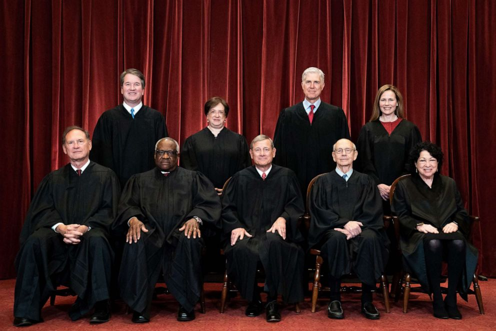

Article 3: The Judicial Branch
There the executive and legislative branches are elected by the people, members of the Judicial Branch are appointed by the President and confirmed by the Senate.
Article III of the Constitution, which establishes the Judicial Branch, leaves Congress significant discretion to determine the shape and structure of the federal judiciary. Even the number of Supreme Court Justices is left to Congress — at times there have been as few as six, while the current number (nine, with one Chief Justice and eight Associate Justices) has only been in place since 1869. The Constitution also grants Congress the power to establish courts inferior to the Supreme Court, and to that end Congress has established the United States district courts, which try most federal cases, and 13 United States courts of appeals, which review appealed district court cases.


Courtroom
First and ground floor of the Supreme Court
Home